To provide eye prescription exams to the third-world, Theia is a low-cost, full eye examination kit. All you need is a mobile phone, cardboard, scissors, and a pair of eyes.
+ Cardboard Housing Kit + iOS Application
+ Product Design + iOS Development + Optometry + Philly Cheese Steaks
In the design, we wanted to ensure that any hardware required by the piece would not have to be bought by or sent to the user. So, why not have them build the kit themselves? Outside of cost, the kit needed - hold the phone 20 inches from the user’s face - shield external light from causing viewing difficulty - be easily made with minimal time and materials - reusable for a community
But with these factors, we wanted to still strive for high accuracy, so we had to do the research.
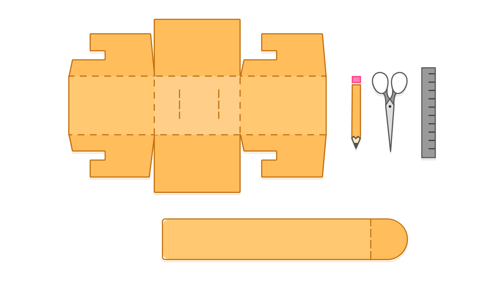Kit - Instruction Template (Colored)
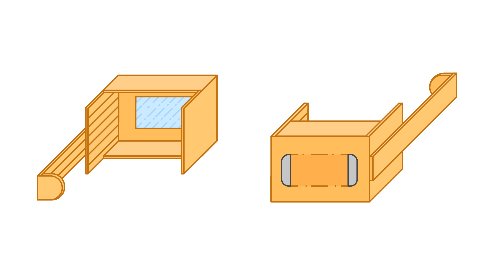Kit - 3D Representation (Colored)
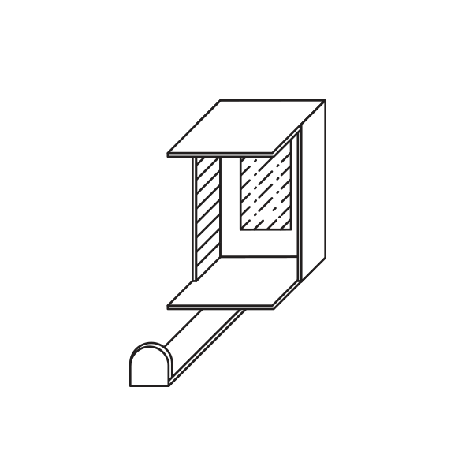 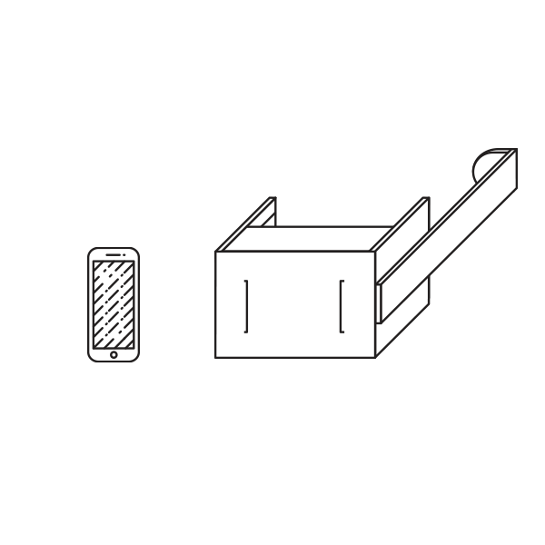Kit - Animated (left: Rotation , right: Housing)
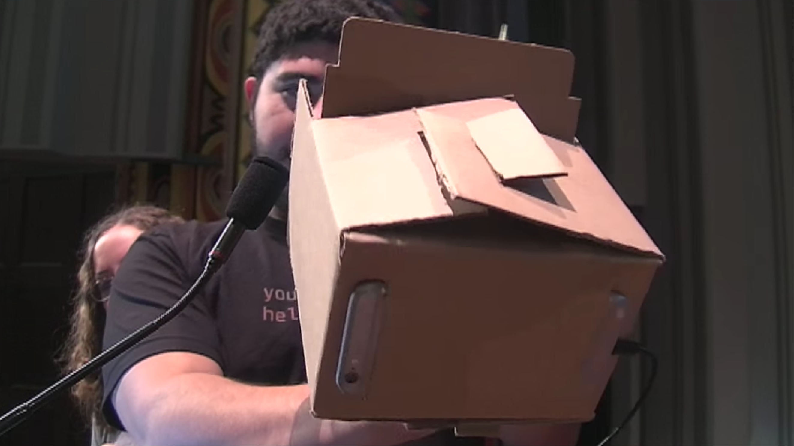Kit - Demo Version
As the target area was third world countries, we had these factors to consider:
+ Ease of Use + Limited Internet Access + International Languages
But with these factors, we wanted to still strive for high accuracy, so we had to do the research.
Scaling from Snellen to Screen | Exam Algortihm
In addition, we decided to use the Landolt test rather than the common Snellen chart. This allows for the test to work on an international scale.
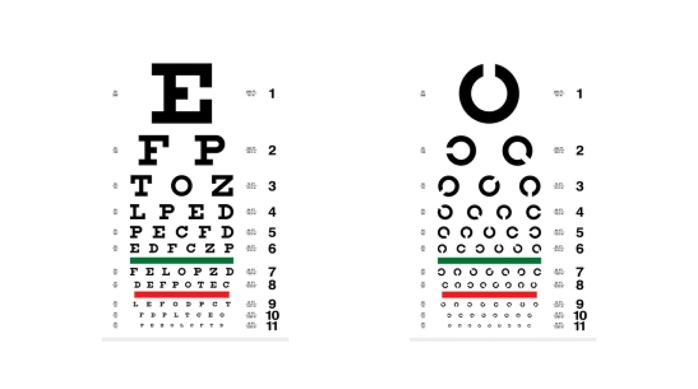left: Snellen ; right: Landolt
We wanted the application to be a simple path from start to finish. No additional bells and whistles. The use case which convinced this was a community center with a single kit that could be easily passed around from person to person with ease. Therefore, we utilized a uni-directional application flow
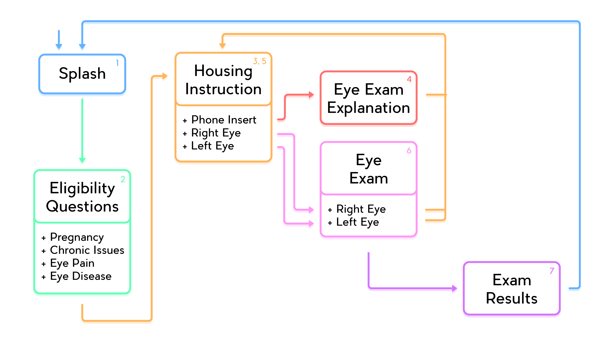the application workflow
Scr. 1 - Splash (left) ; Scr. 2 - Eligibility (right)
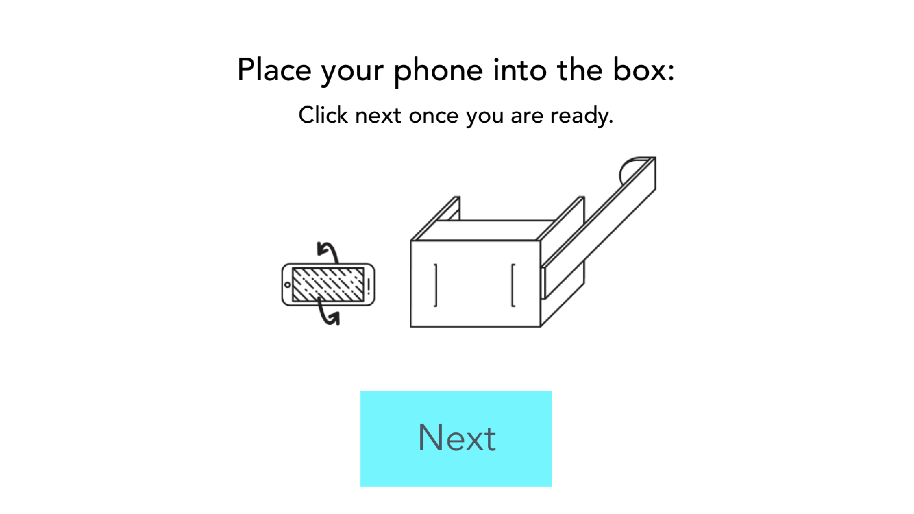Scr. 3 - Insert Housing Instr.
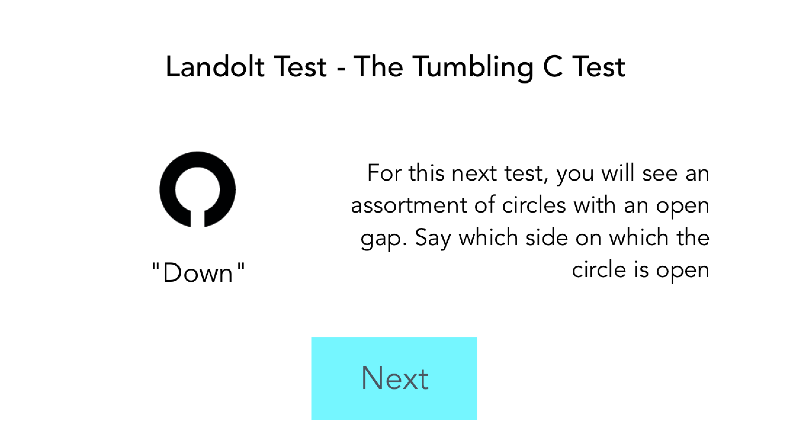Scr. 4 - Exam Explanation
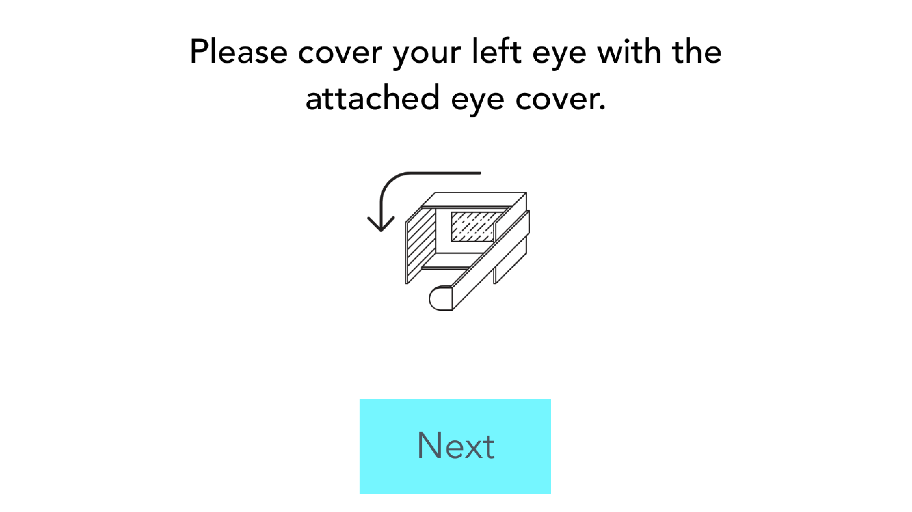Scr. 4 - Eye Housing Instr.
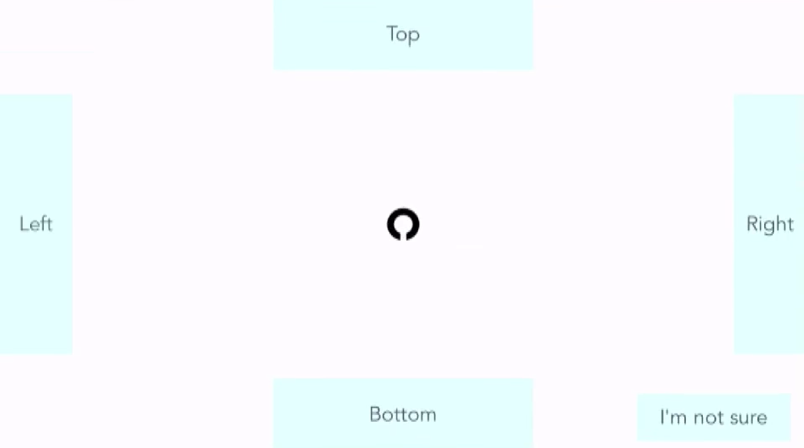Scr. 5 - Eye Exam
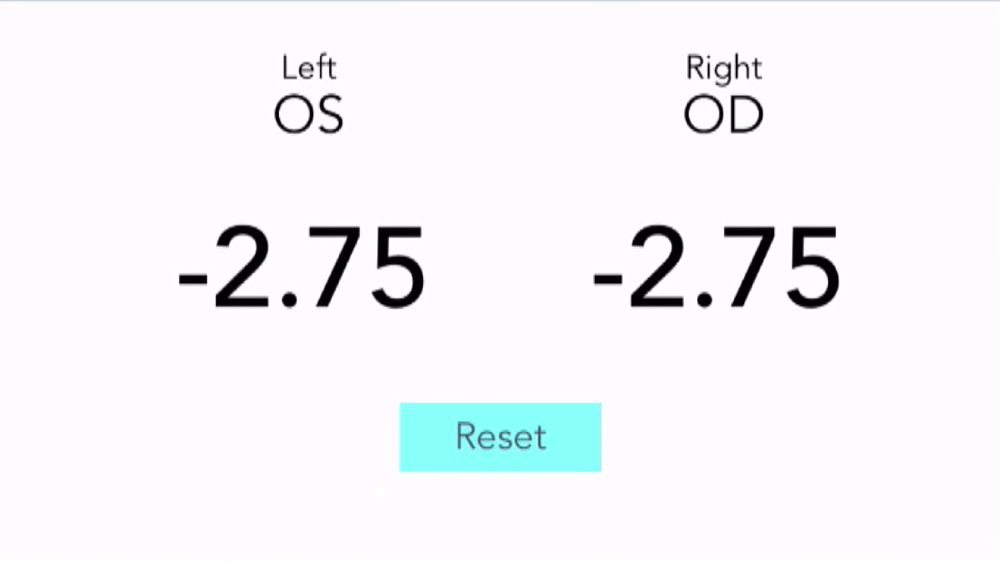Scr. 6 - Exam Result